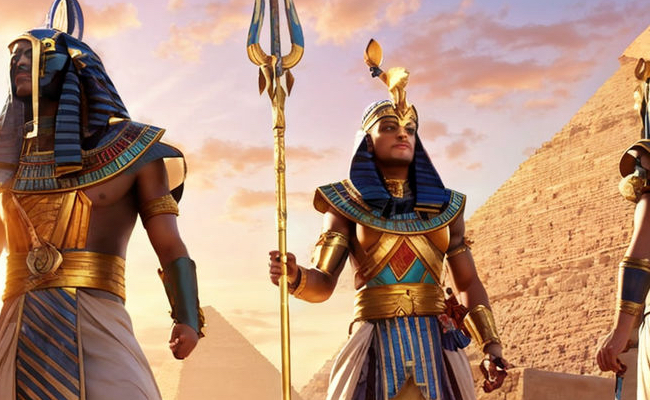
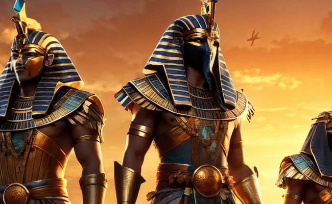
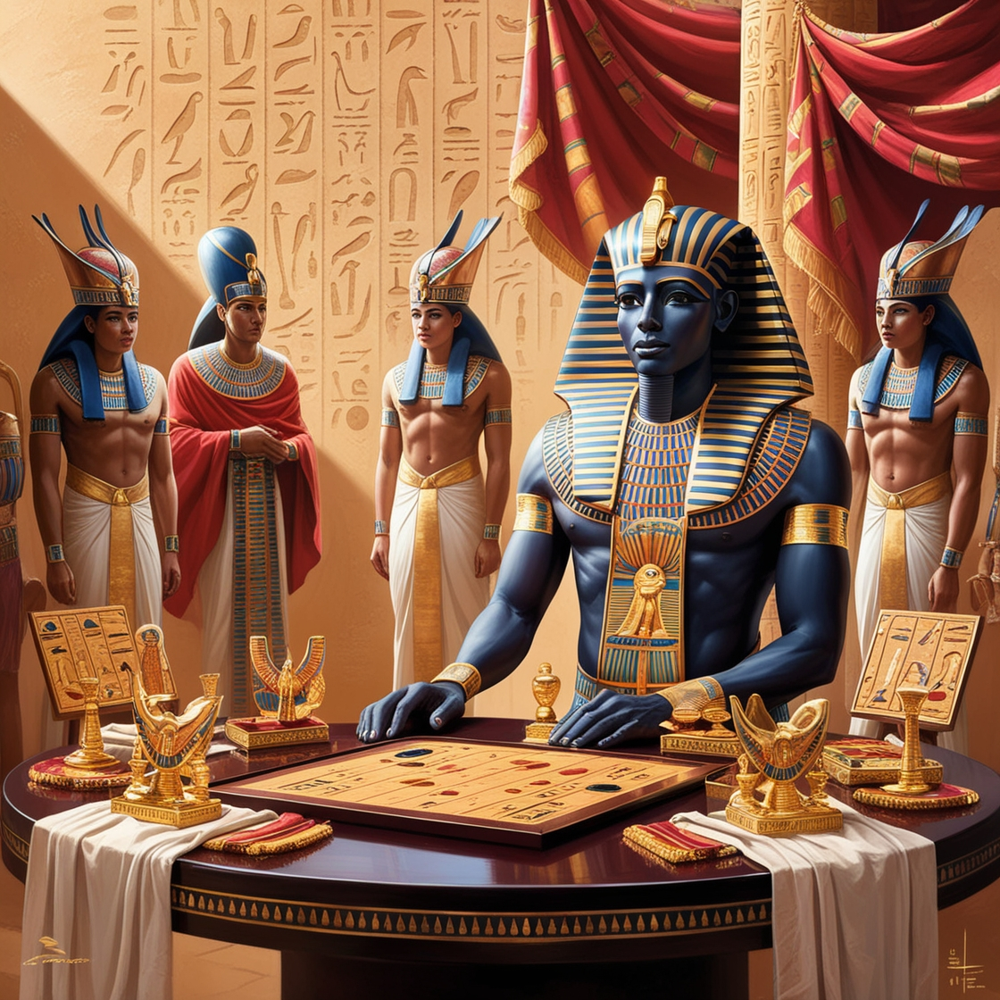
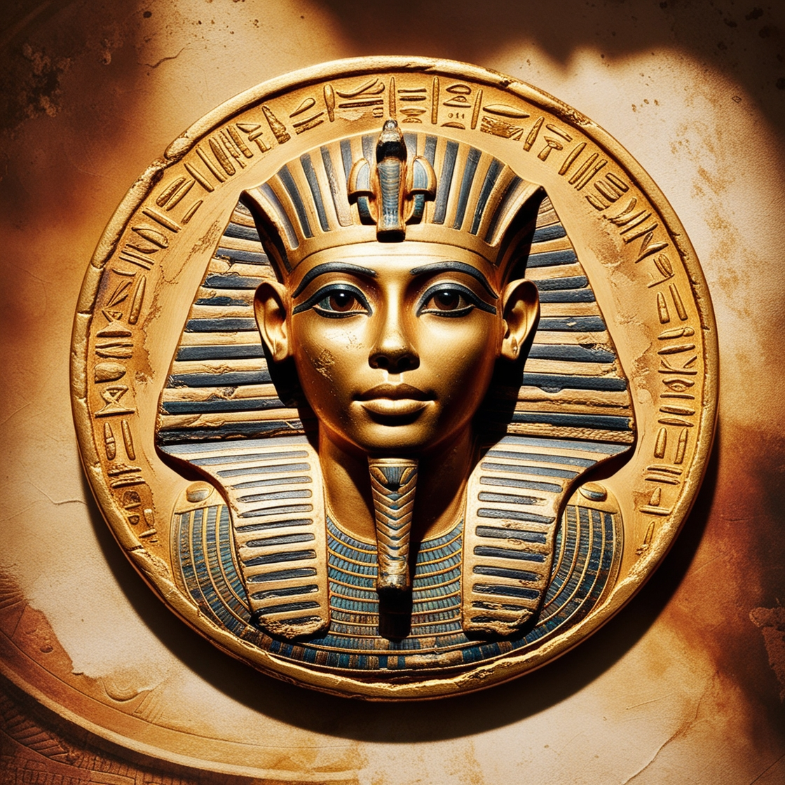
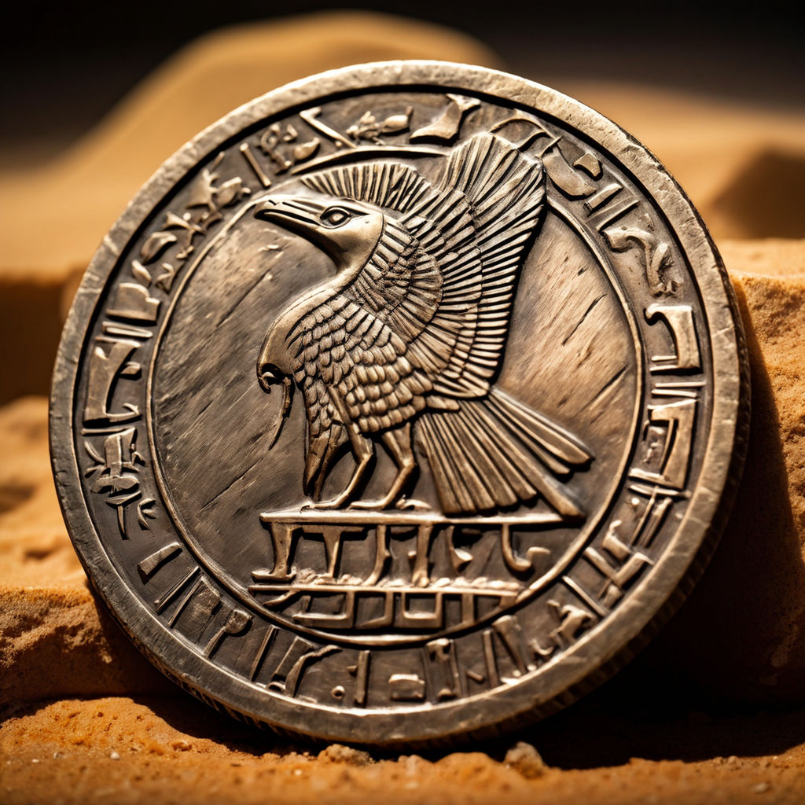

Pinup ile Antik Mısır'a Yolculuk
Pinup'un "Ancient Egypt" oyunu ile tarih öncesi bir maceraya atılın. Antik Mısır'ın büyüleyici dünyasında keşif yapın ve büyük sırları ortaya çıkarın.
OynayınMisyonumuz
"Ancient Egypt" oyununun misyonu, oyunculara antik Mısır'ın büyüleyici ve gizemli dünyasında unutulmaz bir deneyim sunmaktır. Pinup, bu oyunda oyuncuları, eski Mısır'ın kültürel ve tarihi mirasını keşfetmeye teşvik ediyor. Oyun, tarihi olayları ve karakterleri etkileyici bir şekilde yansıtmak için detaylı grafikler ve özgün ses efektleri ile donatılmıştır. Pinup'un amacı, oyuncuların antik Mısır'ın mistik atmosferini hissetmelerini ve tarihte bir yolculuğa çıkmalarını sağlamaktır. Pinup, bu hedefe ulaşmak için oyun mekaniğini, görsel tasarımı ve hikaye anlatımını dikkatlice tasarlamıştır.
 Karakterler
Pharaoh Tutankhamun
Mısır'ın ünlü firavunu, büyük sırların koruyucusu.
Cleopatra
Ünlü Mısır kraliçesi, strateji ve zeka ile tanınır.
Horus
Göz kamaştırıcı Mısır tanrısı, koruyucu ve savaşçı.
Anubis
Ölülerin tanrısı, adalet ve dengeyi temsil eder.
Anubis
Ölülerin tanrısı, adalet ve dengeyi temsil eder.
Anubis
Ölülerin tanrısı, adalet ve dengeyi temsil eder.
Ancient Egypt by Pinup Oyununun Avantajları
Pinup'un Ancient Egypt oyunu, ileri teknoloji ve otantik kültürel bağlamı kullanarak Antik Mısır'ın dünyasına benzersiz bir dalış sunuyor. Sizleri büyüleyici görevler, etkileyici grafikler ve sesler, ayrıca gerçek tarihi olaylar ve mitolojiye dayanan derin bir hikaye bekliyor.
Oyunun temel avantajı, strateji, aksiyon ve bulmaca unsurlarını bir araya getiren dinamik oyun yapısıdır. Oyuncular antik piramitleri keşfedebilir, mitolojik yaratıklarla savaşabilir ve büyük firavunların sırlarını çözebilirler. Her karar önemlidir ve oyunun gidişatını değiştirebilir, bu da birçok olası son sunar.
Ayrıca oyun, oyuncuların ortak hedefler için yarışabileceği veya ekipler kurabileceği tekli ve çok oyunculu modları destekler. Bu, Ancient Egypt by Pinup oyununu hem tek oyunculu maceraları hem de kolektif stratejik eylemleri sevenler için mükemmel hale getirir.
Ödüller
  Ancient Egypt by Pinup Oyununun Değeri
Pinup'un Ancient Egypt oyunu sadece bir oyun değil, her adımın tarih ve sırlarla dolu olduğu antik bir medeniyete büyüleyici bir yolculuktur. Oyunun değeri, oyunculara Antik Mısır'ın kültürü ve mitolojisiyle benzersiz bir etkileşim deneyimi sunmasında yatmaktadır.
Oyun, stratejik düşünmeyi teşvik eder ve oyuncuların kendilerini gerçek birer yönetici ve kaşif gibi hissetmelerini sağlar. Ayrıca, tarihi bağlamın ve mitolojik unsurların derin entegrasyonu, oyunu sadece eğlenceli değil, aynı zamanda eğitici hale getirir, oyuncuların büyük bir geçmiş medeniyeti hakkında daha fazla bilgi edinmelerini sağlar.
Güçlü bir hikaye, çeşitli karakterler ve seviyeler, ayrıca yüksek kaliteli grafikler ve sesler, oyuncuyu unutulmaz bir Ancient Egypt by Pinup dünyasına çeken benzersiz bir atmosfer yaratır. Bu, oyunu hem tarih meraklıları hem de heyecan verici ve orijinal bir oyun macerası arayanlar için ideal bir seçim haline getirir.
Ancient Egypt by Pinup Oyununun Seviye Sayısı
Pinup'un Ancient Egypt oyunu, her biri benzersiz görevler ve zorluklarla dolu 30 büyüleyici seviyeden oluşur. Her seviyede oyuncular, yeni düşmanlar, bulmacalar ve yaratıcı bir yaklaşım ve yetenekli planlama gerektiren stratejik meydan okumalarla karşılaşır.
Her seviye, piramitlerin inşası, mitolojik yaratıklarla savaşlar veya kayıp eserlerin aranması gibi antik Mısır kültürünün ayrı bir yönüne adanmıştır. Seviyeler ilerledikçe daha karmaşık hale gelir, yeni mekanikler sunar ve oyunculardan daha karmaşık çözümler talep eder.
Ayrıca, oyunda ana görevler ilerledikçe açılan ek bonus seviyeler ve gizli görevler bulunur. Bu, oyunun tekrar oynanabilirliğini artırır ve her oyuncunun tüm sırları açığa çıkarmasına ve Ancient Egypt by Pinup dünyasına tamamen dalmasına olanak tanır.